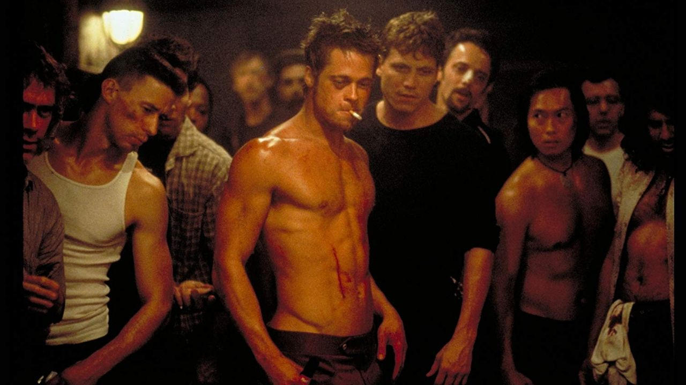
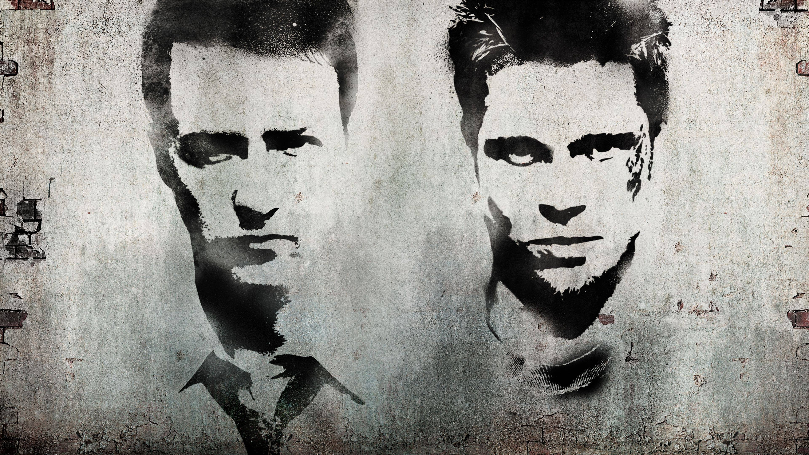
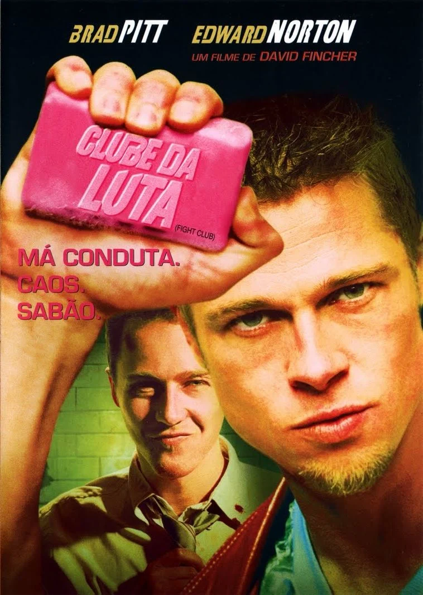

GALERIA



Um funcionário anônimo, incapaz de dormir e sufocado pela rotina corporativa, encontra uma via de escape ao conhecer Tyler Durden, um fabricante de sabonetes carismático e imprevisível. Juntos, eles fundam o Clube da Luta : um espaço clandestino onde homens comuns redescobrem a própria identidade através da violência física, longe das regras e expectativas da sociedade de consumo.
O que começa como um simples encontro secreto rapidamente evolui para um movimento maior — e mais perigoso — colocando em xeque tudo o que o protagonista acreditava saber sobre si mesmo, sobre Tyler e sobre a realidade ao seu redor.
Dirigido por David Fincher e estrelado por Edward Norton, Brad Pitt e Helena Bonham Carter, Clube da Luta é um marco do cinema de 1999: uma crítica ácida ao consumismo, à masculinidade e à alienação moderna, construída sobre uma das reviravoltas mais icônicas da história do cinema.
Tyler Durden é o carismático e anárquico alter ego do narrador em Clube da Luta (1999), dirigido por David Fincher. Anticonsumista e provocador, ele encarna a revolta contra a vida vazia e o materialismo moderno. Brad Pitt deu vida ao personagem com uma atuação magnética, combinando charme, ironia e uma energia perigosa que transformou Tyler em um dos ícones mais marcantes do cinema. O papel consolidou Pitt como muito mais do que um galã de Hollywood, mostrando sua versatilidade como ator
O narrador, vivido por Edward Norton, é um funcionário de escritório anônimo e insone, sufocado pela rotina e pelo consumismo, que busca sentido frequentando grupos de apoio e, depois, o clube da luta. Norton constrói o personagem com uma mistura de ironia seca, fragilidade e tensão crescente, tornando crível a fragmentação de uma mente dividida. Sua atuação sustenta o filme com a voz em off e uma vulnerabilidade que contrasta perfeitamente com o caos de Tyler.
Marla Singer, interpretada por Helena Bonham Carter, é uma mulher desencantada e autodestrutiva que também frequenta grupos de apoio sem precisar deles, o que a torna um espelho incômodo para o narrador. Sarcástica, imprevisível e estranhamente honesta, ela traz humor sombrio e humanidade ao filme. Bonham Carter dá à personagem um magnetismo desgrenhado e melancólico, fazendo de Marla o contrapeso emocional da história..


Clube da Luta (1999), de David Fincher, é uma provocação visual visceral que satiriza o consumismo, a crise da masculinidade e o vazio moderno através da mente fragmentada do protagonista e do enigmático Tyler Durden.
A estética sombria e o plot twist icônico são brilhantes, mas o filme perde a nota máxima pelo ritmo acelerado no final e pela violência excessiva, que pode obscurecer sua crítica social. Ainda assim, permanece um clássico atual e desconfortável.